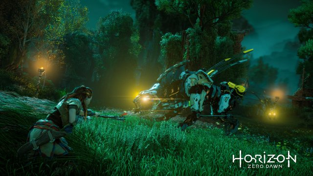

Home
Recensioni
News
Horizon: Zero Dawn

Guerrilla Games ha creato praticamente un mondo, ambientato in un futuro post-post apocalittico (un “post” non bastava) in cui la Terra non è più degli umani, nel senso che non sono più loro la specie dominante, ma è la natura, che si esprime però sotto forma di macchine: sono loro che dettano legge, macchine dalle forme e comportamenti animali (sono chiarissimi i riferimenti a cavalli...
Leggi di piu...